Chapter 3 Mapping a single cell RNAseq dataset
##Data preprocessing
This example dataset from Kanton et al. (2019) (10.1038/s41586-019-1654-9) can be downloaded from: …
For the scope of the analyses, we pre-processed the data, removing low quality cells. We also performed proportional random sampling to ease following this tutorial, to a total of 10.000 cells. This implies the reduction of total cell number while keeping cell groups proportions.
To reproduce the figures in the paper, we used the complete dataset, processed using the ACTIONet pipeline up to clustering (see: https://compbio.mit.edu/ACTIONet/tutorials/intro.html. The data were processed by using the following functions with default parameters: normalize.ace, reduce.ace, runACTIONet, clusterCells).
Note: quality control needs to be done specifically to your dataset. We assume that cells in the following steps have passed standard quality controls. You can refer to the Seurat pipeline here: https://satijalab.org/seurat/archive/v3.0/pbmc3k_tutorial.html or to the scanpy one in Python: https://scanpy.readthedocs.io/en/stable/tutorials/basics/clustering.html.
ext_count_matrix <- readRDS('/Users/asia.zonca/Google Drive/My Drive/01ms_asia_erik_neurogenesis (1)/supplementary_data/Tutorial/sc_count_matrix.rds')Show code
# The pre-processing steps are done following the standard Seurat pipeline:
library(Seurat)
sc_seu <- CreateSeuratObject(counts = ext_count_matrix)
sc_seu <- NormalizeData(object = sc_seu)
sc_seu <- FindVariableFeatures(object = sc_seu, span = 0.3)
sc_seu <- ScaleData(object = sc_seu, features = VariableFeatures(sc_seu))
numPCs <- min(50, ncol(ext_count_matrix) - 1)
sc_seu <- RunPCA(object = sc_seu, features = VariableFeatures(sc_seu), npcs = numPCs, approx = FALSE)
PCs_to_use <- (sc_seu$pca@stdev)^2
PCs_to_use <- PCs_to_use/sum(PCs_to_use)
PCs_to_use <- cumsum(PCs_to_use)
PCs_to_use <- min(which(PCs_to_use >= 0.75))
PCs_to_use <- min(numPCs, PCs_to_use)
sc_seu <- FindNeighbors(object = sc_seu, dims = seq_len(PCs_to_use))
sc_seu <- FindClusters(object = sc_seu, resolution = 1, algorithm = 4, random.seed = 1) # if this gives an error, try setting algorithm to 1 or check ?FindClusters
sc_seu <- RunUMAP(sc_seu, dims = seq_len(PCs_to_use))We can then visualize the UMAP with the clusters:

Since this dataset contains cells from different ages, we can also check the ages distribution and map this information on the single cells:
age_annotation <- unlist(lapply(strsplit(colnames(sc_seu), '.', fixed = TRUE), function(i) {i[2]}))
names(age_annotation) <- Cells(sc_seu)
sc_seu$age <- age_annotation
ages_palette <- viridis(n = length(unique(age_annotation)))
names(ages_palette) <- unique(age_annotation)
DimPlot(
sc_seu,
group.by = "age",
reduction = "umap",
cols = ages_palette
)
3.1 Data summary
The standard mapping procedure requires the definition of summary transcriptional profiles for each cluster, that can be obtained in two ways:
- Pseudobulk profiles (obtained by summing all counts in a cluster together and then normalizing using Counts Per Million (CPM))
- Expression signatures (obtained by averaging the normalized counts of all cells in a cluster and then subtracting the mean expression across all cells)
Depending on the type of question, the user can choose the most suitable summary profile. The key distinction lies in the type of information captured: signatures represent relative expression, describing how a given cluster differs from the others and thus highlighting differences. In contrast, pseudobulk profiles capture absolute expression levels and are therefore more suitable for biological interpretation without emphasizing relative changes. Signatures are not suited if used in a relatively homogeneous dataset, as they will greatly enhance subtle differences which may just depicts noise. For the following example we will use pseudobulk profiles, which is the more straightforward approach.
Pseudobulk profiles can be computed using the following function, which will save as a SingleCellExperiment object the pseudobulk counts in counts and the log-normalized counts per millions in logcounts:
get_pseudobulk <- function(exp_matrix, membership_vector) { #the membership vector represents the group by which we want to compute pseudobulk, in our case cluster labels
unique_mv <- sort(names(which(table(membership_vector)>1)))
pseudo_counts <- t(DelayedArray::rowsum(t(exp_matrix), membership_vector))
rownames(pseudo_counts) <- rownames(exp_matrix)
norm_counts <- log2((t(t(pseudo_counts)/Matrix::colSums(pseudo_counts, na.rm = T))*1000000) + 1) #cpm normalization
out <- SingleCellExperiment::SingleCellExperiment(assays=list(counts=pseudo_counts,
logcounts=norm_counts))
if(is.null(colnames(out))) {
colnames(out) <- colnames(pseudo_counts)
}
out@metadata$cell_count <- table(membership_vector)
return(out)
}We now define the pseudobulks of the clusters that we obtained following the Seurat pipeline:
sc_pseudo <- get_pseudobulk(exp_matrix = sc_seu@assays$RNA$counts,
membership_vector = sc_seu$seurat_clusters)
#> Warning in S4Vectors:::anyMissing(runValue(x_seqnames)): 'S4Vectors:::anyMissing()' is deprecated.
#> Use 'anyNA()' instead.
#> See help("Deprecated")
#> Warning in S4Vectors:::anyMissing(runValue(strand(x))): 'S4Vectors:::anyMissing()' is deprecated.
#> Use 'anyNA()' instead.
#> See help("Deprecated")
colnames(sc_pseudo) <- paste0('c', colnames(sc_pseudo)) #to have strings and not numbers3.2 Mapping on the reference network
Now comes the actual mapping part, which can be easily performed using the mapNetwork function, that requires the following main inputs:
net: the reference network to usenew_profiles: the transcriptional profiles to map (either pseudobulk or signatures)
Other useful inputs can be checked in the function help (?mapNetwork).
Since in the original paper they mention the presence of glial cell types, inhibitory and excitatory neurons, it is reasonable to map on the corticogenesis network. If your experimental design already defines the presence of only glial cells or only excitatory neurons (with their respective precursors), then it is suggested to map only on the neurogenesis and gliogenesis steps. Another approach is to first map on the on the more general corticogenesis network and then map again on the precise lineage-specific networks, also on a subset of cells.
We can now visualize the network with the mapped clusters on top:
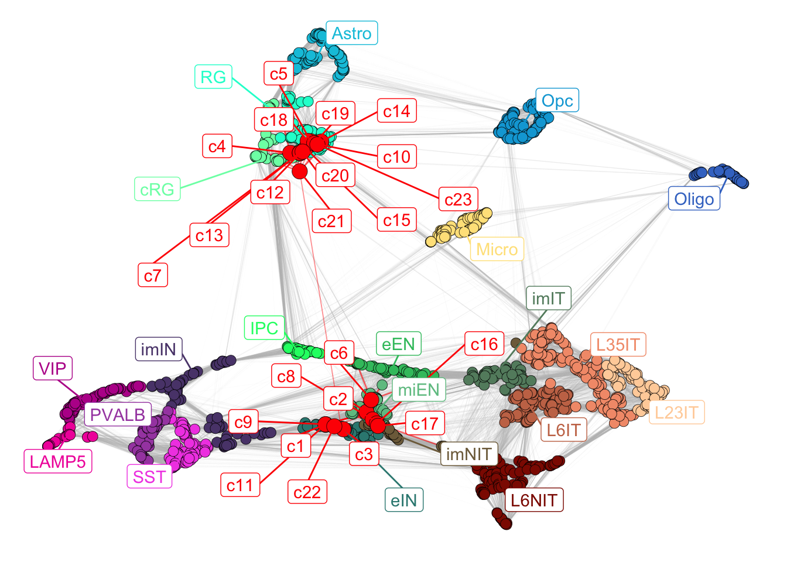
Newly mapped clusters will locate close to the most similar reference clusters, so it is possible to observe the most similar subclasses for each mapped cluster.
By visualizing the mapped network, we can already appreciate how the clusters generally map into two different sections of the network, one close to radial glia and cycling radial glia, while the other close to immature neurons. To quantify similarity, we developed a score per subclass per cluster, using the 15 most similar reference clusters’ annotations (the number of reference clusters to use can be set by changing n_nearest in the mapNetwork function).
This score sums up to 1 and represents the weighted fraction of clusters in the neighborhood belonging to the different subclasses.
The score can be visualized with a barplot reporting on the y-axis the proportions (between 0-1) of the different subclasses, and on the x-axis the mapped clusters.

To get a single label for each mapped cluster, we take the maximum of these scores. This depicts the most similar subclass among the closest neighbors.
mapped_sc_pseudo$annotation$Best.Annotation
#> c1 c2 c3 c4 c5 c6 c7
#> "eIN" "miEN" "eIN" "cRG" "RG" "miEN" "cRG"
#> c8 c9 c10 c11 c12 c13 c14
#> "miEN" "eIN" "RG" "eIN" "cRG" "cRG" "RG"
#> c15 c16 c17 c18 c19 c20 c21
#> "RG" "imNIT" "imNIT" "RG" "RG" "RG" "cRG"
#> c22 c23
#> "eIN" "RG"The same quantification can be obtained for stages of maturation, either by specifying color_attr = ‘Stages’ in the mapNetwork function, or by running the annotateMapping function, which requires the following inputs:
net: the reference network to use.new_cor: the correlation between mapped points and reference clusters, can be found here mapped_object$new_cor.color_attr: the annotation label to use, in this case ‘Stages’.
Our mapping strategy allows the mapping of any expression matrix, thus we added a quantification of the mapping confidence, described with two diverse measures: a. local score (mapped_object\(annotation\)Mapping.Confidence) for each mapped point, showing average of the 15 highest correlation values that mapped point has with the reference clusters b. global score (mapped_object\(annotation\)Global.Confidence), describing the average confidence among all mapped point.
The confidence values can be accessed in the following way:
# per cluster confidence
mapped_sc_pseudo$annotation$Mapping.Confidence
#> c1 c2 c3 c4 c5 c6
#> 0.7130546 0.7547882 0.6901726 0.8477842 0.7965150 0.7947670
#> c7 c8 c9 c10 c11 c12
#> 0.6281157 0.7647813 0.7314415 0.7639241 0.7194806 0.6995298
#> c13 c14 c15 c16 c17 c18
#> 0.6288900 0.7215679 0.8474292 0.7706888 0.7342306 0.8037366
#> c19 c20 c21 c22 c23
#> 0.6317051 0.7253773 0.5659153 0.6400742 0.5006500
# global confidence
mapped_sc_pseudo$annotation$Global.Confidence
#> [1] 0.7162878The confidence score not only tells how similar are the mapped points to neighboring clusters, but also can help identifying profiles of low quality or cell types not represented in the resource.
For example, cluster 23 has a slightly lower confidence score (~0.50) compared to the others, so it may be worth further checking the quality of the cells in that cluster (not done here), to assess whether this could be a low quality group of cells.
The confidence score can then be applied to the inferred annotations that we defined above, as some clusters may have a high confidence, but can have neighbors with different annotations, hence inferring the right annotation can be trickier:
# checking the annotation confidence of the first five clusters
mapped_sc_pseudo$annotation$Annotations.Confidence[seq(1,5)]
#> $c1
#> eIN miEN
#> 0.61520448 0.09785007
#>
#> $c2
#> miEN imNIT
#> 0.6538900 0.1008981
#>
#> $c3
#> eIN imNIT
#> 0.64261159 0.04756101
#>
#> $c4
#> cRG RG
#> 0.5631011 0.2846830
#>
#> $c5
#> RG cRG
#> 0.74243175 0.05408324###Knwoledge transfer
The annotations newly defined can now be transferred to the original dataset and visualized at the single cell level.
new_annotation <- mapped_sc_pseudo$annotation$Best.Annotation[paste0('c', sc_seu$seurat_clusters)]
names(new_annotation) <- Cells(sc_seu)
sc_seu$annotation <- new_annotation
corticogenesis_palette <- unique(corticogenesis_sce$SubClass_color)
names(corticogenesis_palette) <- unique(corticogenesis_sce$SubClass)
ggpubr::ggarrange(plotlist = list(
DimPlot(
sc_seu,
reduction = "umap",
label = TRUE,
) + ggtitle("clusters"),
DimPlot(
sc_seu,
group.by = "annotation",
reduction = "umap",
cols = corticogenesis_palette,
)))
Figure 3.1: UMAP with clusters and annotations.
By looking at the UMAP labelled by cluster together with the newly annotated UMAP, we can see that the cells annotated as cRG that are very close to all the cells annotated as RG are indeed those of the cluster 4, the cluster with similar annotation values for both cRG and RG.
To further validate the annotation, we can also visualize the preferentially expressed genes in the relevant subclasses:
sc_seu$eIN.Score <- Matrix::colMeans(
GetAssayData(sc_seu, slot = "data")[corticogenesis_pe_genes$eIN[which(corticogenesis_pe_genes$eIN %in% rownames(sc_seu))],])
#> Warning: The `slot` argument of `GetAssayData()` is deprecated as of
#> SeuratObject 5.0.0.
#> ℹ Please use the `layer` argument instead.
#> This warning is displayed once every 8 hours.
#> Call `lifecycle::last_lifecycle_warnings()` to see where
#> this warning was generated.
FeaturePlot(sc_seu, features = "eIN.Score", reduction = "umap")
#> Warning: The `slot` argument of `FetchData()` is deprecated as of
#> SeuratObject 5.0.0.
#> ℹ Please use the `layer` argument instead.
#> ℹ The deprecated feature was likely used in the Seurat
#> package.
#> Please report the issue at
#> <https://github.com/satijalab/seurat/issues>.
#> This warning is displayed once every 8 hours.
#> Call `lifecycle::last_lifecycle_warnings()` to see where
#> this warning was generated.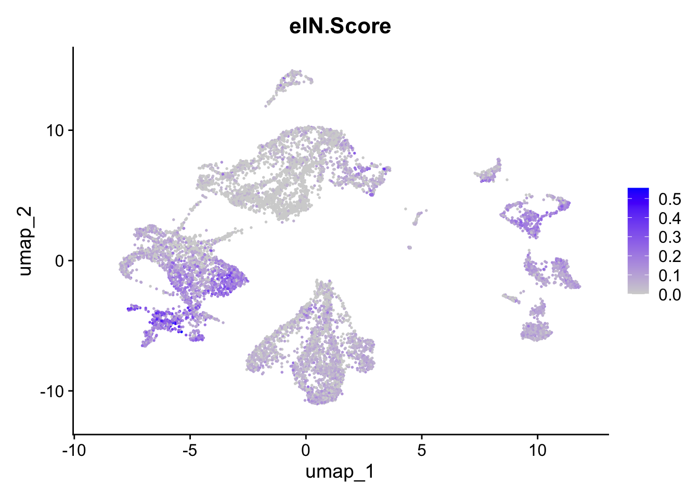
sc_seu$cRG.Score <- Matrix::colMeans(
GetAssayData(sc_seu, slot = "data")[corticogenesis_pe_genes$cRG[which(corticogenesis_pe_genes$cRG %in% rownames(sc_seu))],])
FeaturePlot(sc_seu, features = "cRG.Score", reduction = "umap")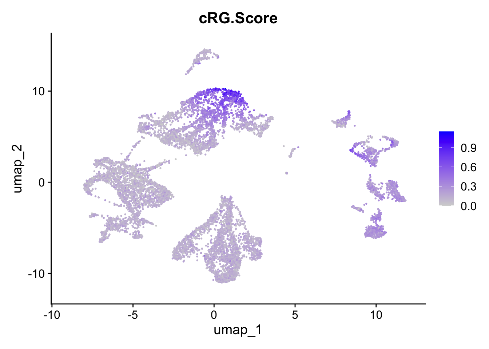
sc_seu$RG.Score <- Matrix::colMeans(
GetAssayData(sc_seu, slot = "data")[corticogenesis_pe_genes$RG[which(corticogenesis_pe_genes$RG %in% rownames(sc_seu))],])
FeaturePlot(sc_seu, features = "RG.Score", reduction = "umap")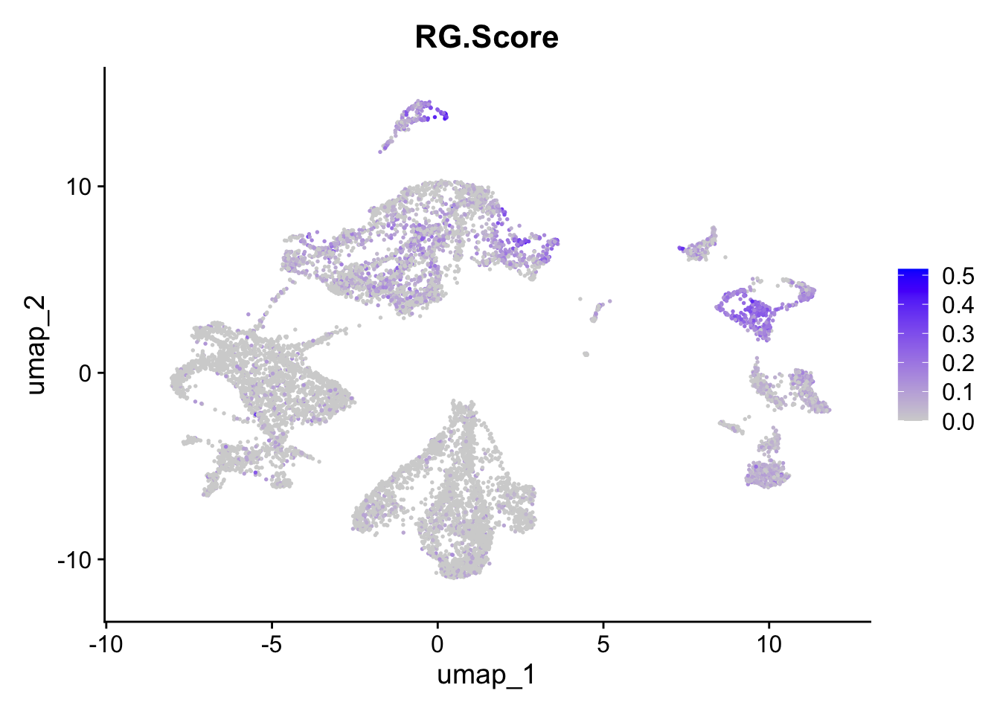
sc_seu$imNIT.Score <- Matrix::colMeans(
GetAssayData(sc_seu, slot = "data")[corticogenesis_pe_genes$imNIT[which(corticogenesis_pe_genes$imNIT %in% rownames(sc_seu))],])
FeaturePlot(sc_seu, features = "imNIT.Score", reduction = "umap")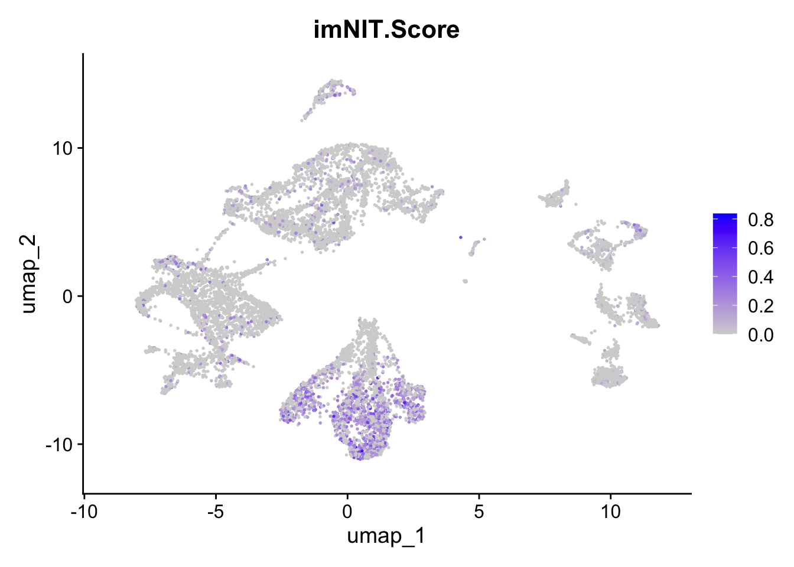
sc_seu$miEN.Score <- Matrix::colMeans(
GetAssayData(sc_seu, slot = "data")[corticogenesis_pe_genes$miEN[which(corticogenesis_pe_genes$miEN %in% rownames(sc_seu))],])
FeaturePlot(sc_seu, features = "miEN.Score", reduction = "umap")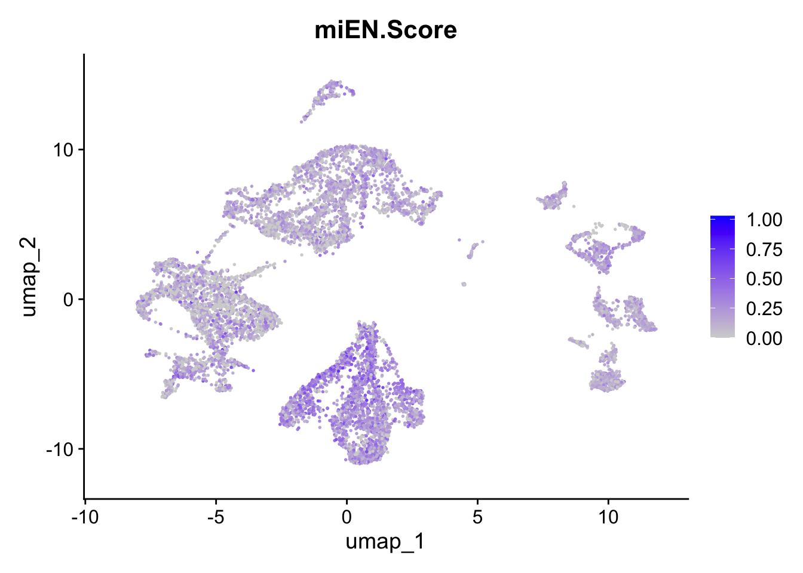
We can see by the expression of preferentially expressed genes that indeed the annotations match the expectations, and that cluster 4 has high expression of cRG markers, confirming the annotations given by the mapping.
A further analysis that can be made it seeing how our manually curated Gene Ontology Biological Processes are expressed in the mapped clusters.
First, we have to obtain the average expression of those gene sets:
sc_seu_cortico_GOBP <- do.call(rbind, lapply(corticogenesis_GO, function(g) {
g <- g[which(g %in% rownames(sc_seu))]
Matrix::colMeans(logcounts(sc_pseudo)[g,])
}))
rownames(sc_seu_cortico_GOBP) <- gsub(" \\(GO:[0-9]+\\)$", "", rownames(sc_seu_cortico_GOBP))
sc_seu_cortico_GOBP <- sc_seu_cortico_GOBP[,mixedorder(colnames(sc_seu_cortico_GOBP))]Then, we can visualize the relative expression in a Heatmap
cortico_subclass_groups <- colnames(corticogenesis_preferential_GO$GO_Biological_Process_2025$preferential)
cortico_subclass_groups[which(cortico_subclass_groups %in% c('L23IT', 'L35IT', 'L6IT', 'L6NIT'))] <- 'matEN'
cortico_subclass_groups[which(cortico_subclass_groups %in% c('LAMP5', 'SST', 'PVALB', 'VIP'))] <- 'matIN'
cortico_subclass_groups[which(cortico_subclass_groups %in% c('imIT', 'imNIT', 'eEN', 'miEN'))] <- 'immEN'
cortico_subclass_groups[which(cortico_subclass_groups %in% c('eIN', 'imIN'))] <- 'immIN'
cortico_subclass_groups[which(cortico_subclass_groups %in% c('Opc', 'Oligo', 'Astro'))] <- 'maGlia'
cortico_subclass_groups[which(cortico_subclass_groups %in% c('Micro'))] <- 'miGlia'
cortico_subclass_groups[which(cortico_subclass_groups %in% c('RG', 'cRG', 'IPC'))] <- 'Prog'
cortico_subclass_groups <- factor(cortico_subclass_groups, levels = c('Prog', 'immEN', 'immIN', 'matEN', 'matIN', 'maGlia', 'miGlia'))
cortico_gobp_groups <- factor(c(rep('Astro', 4), rep('Oligo', 3), rep('Opc', 3), rep('OligoGlia', 2), rep('matEN', 4), rep('matIN', 4), rep('immEN', 4), rep('Micro', 4), rep('RG', 4), rep('Stress', 4)), levels = c('RG', 'immEN', 'matEN', 'matIN', 'Opc', 'Oligo', 'OligoGlia', 'Astro', 'Micro', 'Stress'))cortico_gobp_pe <- corticogenesis_preferential_GO$GO_Biological_Process_2025$preferential[names(corticogenesis_GO),]
rownames(cortico_gobp_pe) <- gsub(" \\(GO:[0-9]+\\)$", "", rownames(cortico_gobp_pe))
ht1 <- Heatmap(
cortico_gobp_pe,
name = 'preferential\nexpression',
width = unit(ncol(cortico_gobp_pe) * 4.2, 'mm'),
height = unit(nrow(cortico_gobp_pe) * 4.2, 'mm'),
show_row_dend = FALSE,
show_column_dend = FALSE,
row_title_rot = 0,
column_title_rot = 90,
column_split = cortico_subclass_groups,
cluster_column_slices = FALSE,
row_split = cortico_gobp_groups,
cluster_row_slices = FALSE,
column_title_gp = gpar(fontsize = 0)
)
ht2 <- Heatmap(
t(scale(t(sc_seu_cortico_GOBP))),
name = 'scaled\nexpression',
width = unit(ncol(sc_seu_cortico_GOBP) * 4.2, 'mm'),
cluster_columns = TRUE, right_annotation = rowAnnotation(max = anno_barplot(apply(sc_seu_cortico_GOBP, 1, max), gp = gpar(fill = 'black')), annotation_name_side = 'top', annotation_name_rot = 0), bottom_annotation = HeatmapAnnotation(annotation = mapped_sc_pseudo$annotation$Best.Annotation[colnames(sc_seu_cortico_GOBP)], col = list(annotation = corticogenesis_palette), show_legend = FALSE), show_column_dend = FALSE
)
ht_list <- ht1 + ht2
draw(ht_list, heatmap_legend_side = "left")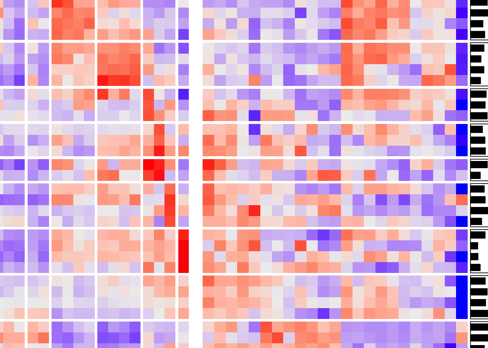
From this Heatmap we can see that generally the biological processes match the annotations, but we can also see that clusters 19 and 23 (on the left) show high expression of stress-related processes, while displaying low expression of the terms more related to radial glia, which is their annotation. This could explain why cluster 23 has such a low mapping confidence.
The same type of analysis can be done with the neurogenesis network:
sc_seu_neuro_GOBP <- do.call(rbind, lapply(neurogenesis_GO, function(g) {
g <- g[which(g %in% rownames(sc_seu))]
Matrix::colMeans(logcounts(sc_pseudo)[g,])
}))
rownames(sc_seu_neuro_GOBP) <- gsub(" \\(GO:[0-9]+\\)$", "", rownames(sc_seu_neuro_GOBP))
sc_seu_neuro_GOBP <- sc_seu_neuro_GOBP[,mixedorder(colnames(sc_seu_neuro_GOBP))]neuro_gobp_pe <- neurogenesis_preferential_GO$GO_Biological_Process_2025$activity[names(neurogenesis_GO),]
neuroTrends <- do.call(cbind, lapply(rownames(neuro_gobp_pe), function(i) smooth.spline(1:length(neuro_gobp_pe[i,]), neuro_gobp_pe[i,], spar = 1)$y))
colnames(neuroTrends) <- rownames(neuro_gobp_pe)
neuroTrends <- t(neuroTrends)[names(neurogenesis_GO),]
neuroTrends <- neuroTrends[order(apply(neuroTrends, 1, which.max), Matrix::rowMeans(neuroTrends)),]
rownames(neuroTrends) <- gsub(" \\(GO:[0-9]+\\)$", "", rownames(neuroTrends))
stage_palette <- unique(neurogenesis_sce$Stages_color)
names(stage_palette) <- unique(neurogenesis_sce$Stages)
h1 <- Heatmap(t(scale(t(neuroTrends))), cluster_columns = F, cluster_rows = F, bottom_annotation = HeatmapAnnotation(df=data.frame(stage=neurogenesis_sce$Stages), col=list(stage=stage_palette), show_legend = F, show_annotation_name = F), name = 'inferred expression\n(z scaled)', height = unit(100, 'mm'), width = unit(30, 'mm'))
ht2 <- Heatmap(
t(scale(t(sc_seu_neuro_GOBP[rownames(neuroTrends),]))),
name = 'scaled\nexpression',
width = unit(ncol(sc_seu_neuro_GOBP) * 4.2, 'mm'),
cluster_columns = TRUE, right_annotation = rowAnnotation(max = anno_barplot(apply(sc_seu_neuro_GOBP[rownames(neuroTrends),], 1, max), gp = gpar(fill = 'black'))), bottom_annotation = HeatmapAnnotation(annotation = mapped_sc_pseudo$annotation$Best.Annotation[colnames(sc_seu_cortico_GOBP)], col = list(annotation = corticogenesis_palette), show_legend = FALSE), show_column_dend = FALSE
)
ht_list <- h1 + ht2
draw(ht_list, heatmap_legend_side = "left")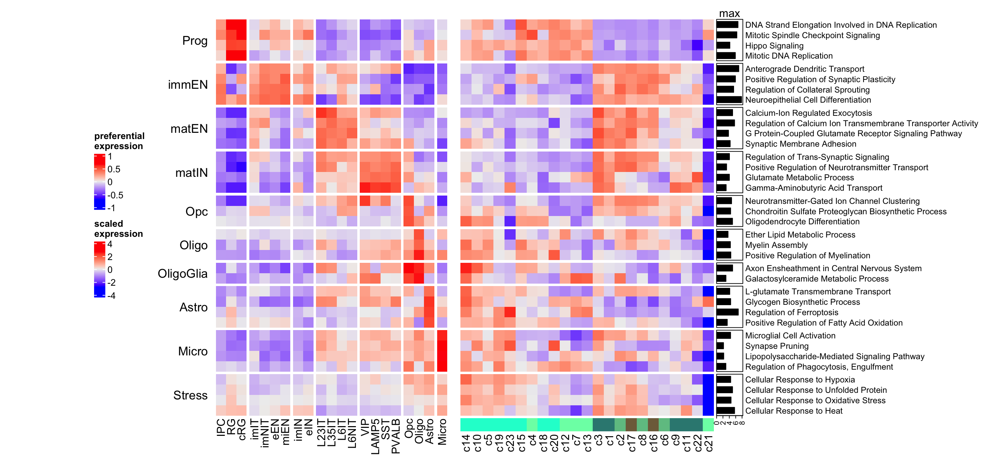
Again, the cluster with the highest neuroinflammatory response (indicative of stress) is cluster 23. Here we can see that clusters that are assigned to immature neurons annotations indeed display higher expression of Biological Processes more associated with mature neurons compared to those clusters annotated as radial glia.
Additionally, we can visualize the mapped points directly on the eTraces, to see how similar they are to clusters that express more or less certain genes. The function to perform such analysis is map_eTrace, which requires the following inputs:
net: the reference network to usemapped_obj: the result of mapNetwork- the inputs required to run plot_eTrace (see the chapter
3-Analysis_Tools)


From this type on analysis we can clearly appreciate the distinction between radial glia-like clusters and more neuronal ones. Additionally, we can see at a glance which mapped points resemble more mature reference clusters, as age goes from left to right. The more rightward clusters are: 2, 9, 11, and 14. If we check the age with the highest percentage in each cluster, we can see that those clusters are also those with the highest percentage of latest-stage cells:
sort(apply(table(sc_seu$age, paste0('c', sc_seu$seurat_clusters)), 2, function(i) {i/sum(i)})['Organoid-4M',])
#> c12 c13 c17 c20 c21
#> 0.000000000 0.000000000 0.000000000 0.000000000 0.000000000
#> c22 c7 c16 c18 c10
#> 0.000000000 0.000000000 0.002590674 0.002857143 0.008968610
#> c8 c3 c6 c5 c15
#> 0.012219959 0.013736264 0.032374101 0.043478261 0.087281796
#> c19 c4 c1 c23 c2
#> 0.097826087 0.103395062 0.111006585 0.117647059 0.428571429
#> c14 c11 c9
#> 0.440097800 0.471655329 0.530303030We can also obtain markers for each cluster using the Seurat function FindAllMarkers and plot those genes in the eTraces.
markers <- FindAllMarkers(sc_seu, only.pos = TRUE, min.pct = 0.5, logfc.threshold = 1)
#> Warning: `PackageCheck()` was deprecated in SeuratObject 5.0.0.
#> ℹ Please use `rlang::check_installed()` instead.
#> ℹ The deprecated feature was likely used in the Seurat
#> package.
#> Please report the issue at
#> <https://github.com/satijalab/seurat/issues>.
#> This warning is displayed once every 8 hours.
#> Call `lifecycle::last_lifecycle_warnings()` to see where
#> this warning was generated.
markers <- markers[which(markers$p_val_adj < 0.001),]
markers <- split(markers$gene, markers$cluster)lapply(names(markers), function(i) {
g <- markers[[i]]
g <- g[which(g %in% rownames(corticogenesis_sce))]
plot_eTrace(net = corticogenesis_sce, genes = g, main = i)
})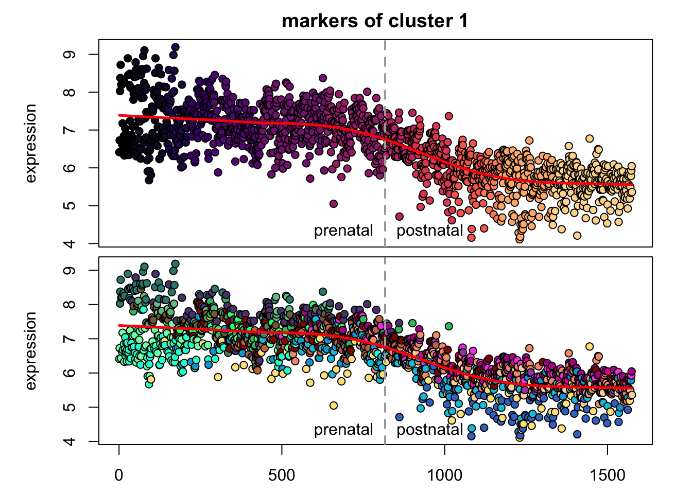


 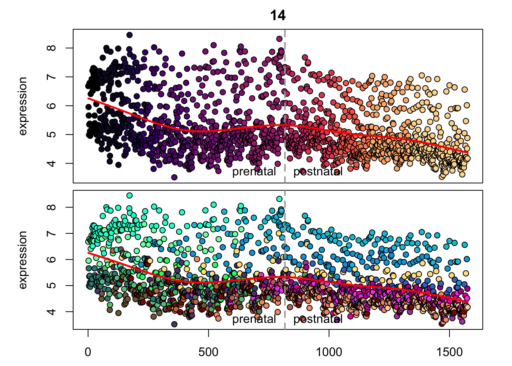
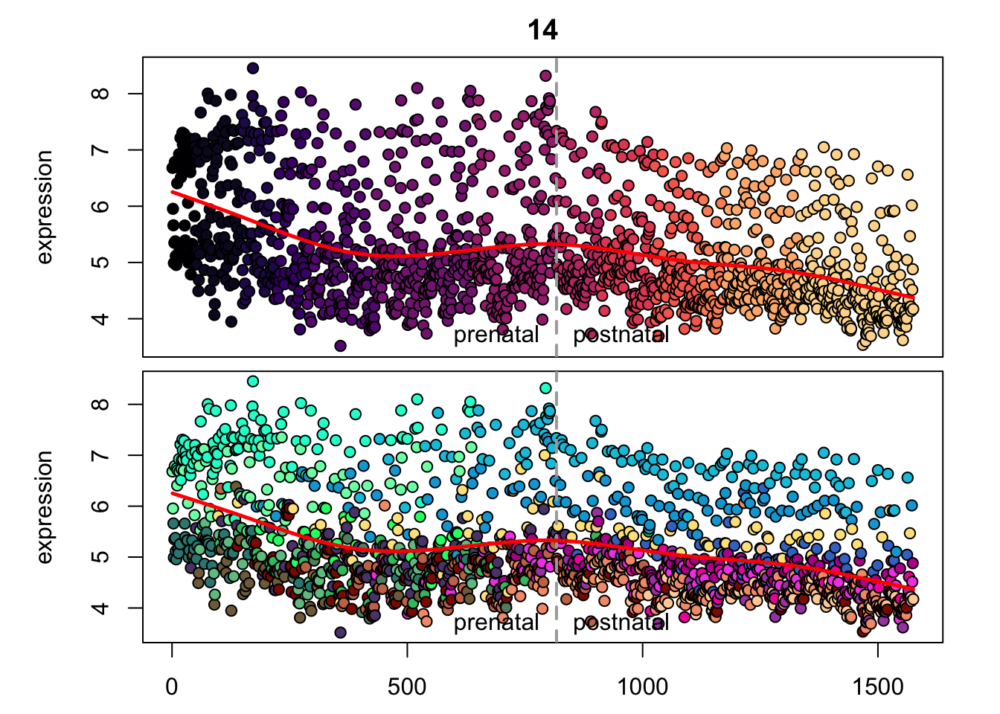


#> [[1]]
#> NULL
#>
#> [[2]]
#> NULL
#>
#> [[3]]
#> NULL
#>
#> [[4]]
#> NULL
#>
#> [[5]]
#> NULL
#>
#> [[6]]
#> NULL
#>
#> [[7]]
#> NULL
#>
#> [[8]]
#> NULL
#>
#> [[9]]
#> NULL
#>
#> [[10]]
#> NULL
#>
#> [[11]]
#> NULL
#>
#> [[12]]
#> NULL
#>
#> [[13]]
#> NULL
#>
#> [[14]]
#> NULL
#>
#> [[15]]
#> NULL
#>
#> [[16]]
#> NULL
#>
#> [[17]]
#> NULL
#>
#> [[18]]
#> NULL
#>
#> [[19]]
#> NULL
#>
#> [[20]]
#> NULL
#>
#> [[21]]
#> NULL
#>
#> [[22]]
#> NULL
#>
#> [[23]]
#> NULLAgain, it is easy to distinguish between more neuronal clusters and more radial glia-like clusters, but also we can find some clusters that are more inhibitory like (e.g. clusters 22 and 11), and we can see that cluster 23 markers are also highly expressed in microglia, which again can point to possible stress.